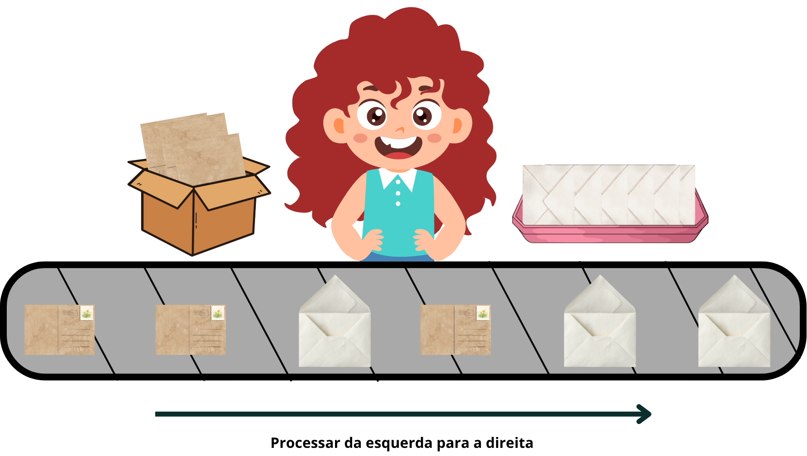

Exercício 4
Cartões e Envelopes
A Inês trabalha na secretaria de uma escola, onde prepara cartas para enviar aos encarregados de educação. À sua frente passa um tapete rolante com cartões de identificação e envelopes vazios.
A descrição do trabalho da Inês é a seguinte:
- Retira cada objeto do tapete, um de cada vez, da esquerda para a direita.
- Quando retira um cartão, coloca-o numa caixa ao seu lado.
- Quando retira um envelope, pega num cartão da caixa, coloca-o dentro do envelope e põe a carta pronta numa bandeja.
Processar da esquerda para a direita.

Podem acontecer dois problemas:
- Se aparecer um envelope e não houver nenhum cartão disponível na caixa, a carta não pode ser preparada.
- Se o tapete acabar e ainda sobrarem cartões na caixa, ficaram cartões sem envelope.
Pergunta
Qual das seguintes sequências de cartões e envelopes, quando processada da esquerda para a direita, não causa problemas à Inês?